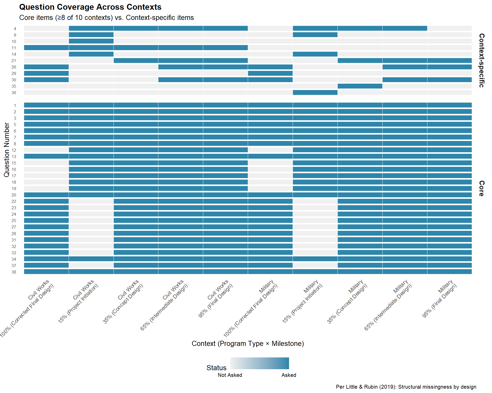
Factor Analysis
Overview
Factor analysis evaluates the underlying structure of the EQRI questionnaire to answer:
- Are we asking the right questions? (coverage, gaps, redundancy)
- How many dimensions? Do questions measure distinct aspects of engineering quality?
- Question sensitivity: Which questions most influence each indicator?
Analysis Strategy
Per Little & Rubin (2019, Statistical Analysis with Missing Data), questionnaires with structural missingness by design require context-aware analysis.
The EQRI questionnaire includes:
- Core items: Asked across most/all contexts (program types × milestones)
- Context-specific items: Asked only for certain programs or milestones
Approach
Based on the revised factor analysis strategy (see dev/revised_sprint1_strategy.R):
- Identify core items - Questions present in ≥8 of 10 contexts (<20% missing)
- Assess factorability by context - Evaluate each program × milestone combination
- Document response patterns - Show which contexts have sufficient data for analysis
Question Coverage
This heatmap shows which questions are asked in each context, helping identify core vs. context-specific items.
Question-to-Indicator Mapping
Understanding which questions contribute to each indicator is essential for interpreting indicator scores and conducting factor analysis.
Visual Mapping
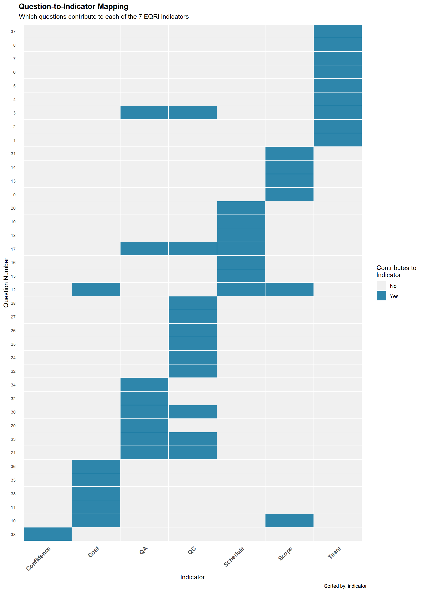
Summary Table
| Indicator | Questions | Responses | Question Numbers |
|---|---|---|---|
| Confidence | 1 | 342 | 38 |
| Cost | 6 | 797 | 10, 11, 12, 33, 35, 36 |
| QA | 8 | 1976 | 3, 17, 21, 23, 29, 30, 32, 34 |
| QC | 11 | 2858 | 3, 17, 21, 22, 23, 24, 25, 26, 27, 28, 30 |
| Schedule | 7 | 1980 | 12, 15, 16, 17, 18, 19, 20 |
| Scope | 6 | 1063 | 9, 10, 12, 13, 14, 31 |
| Team | 9 | 2883 | 1, 2, 3, 4, 5, 6, 7, 8, 37 |
Interpretation:
The seven EQRI indicators are calculated from specific sets of questions:
Confidence: 1 questions (38)
Cost: 6 questions (10, 11, 12, 33, 35, 36)
QA: 8 questions (3, 17, 21, 23, 29, 30, 32, 34)
QC: 11 questions (3, 17, 21, 22, 23, 24, 25, 26, 27, 28, 30)
Schedule: 7 questions (12, 15, 16, 17, 18, 19, 20)
Scope: 6 questions (9, 10, 12, 13, 14, 31)
Team: 9 questions (1, 2, 3, 4, 5, 6, 7, 8, 37)
This mapping is defined in the questionnaire design and determines how individual question responses aggregate into indicator scores.
Questionnaire Reliability Assessment
Before conducting factor analysis, we must establish that the questionnaire produces reliable (internally consistent) measurements. Per Revelle & Zinbarg (2009), reliability is a prerequisite for validity and factor interpretability.
Reliability Metrics
We assess reliability using two complementary approaches:
- Cronbach’s Alpha (α) - Classical test theory measure of internal consistency
- McDonald’s Omega (ω) - Model-based alternative that accounts for hierarchical factor structure
Per McDonald (1999) and Revelle & Zinbarg (2009), omega is often preferred when items may reflect both a general factor and group factors, as is likely in the EQRI questionnaire with its seven indicators.
Sample Size Adequacy
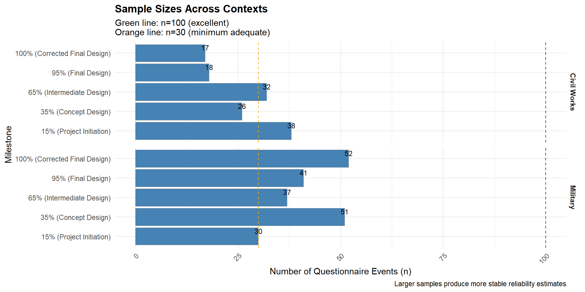
Interpretation:
Per Kline (2000): - Green line (n=100): Excellent sample size for stable reliability estimates - Orange line (n=30): Minimum adequate sample size; estimates should be interpreted cautiously
Contexts with n ≥ 100: 0 of 10 (0%)
Contexts with n ≥ 30: 7 of 10 (70%)
⚠️ Contexts with smaller sample sizes (n < 100) will produce less stable reliability estimates.
Cronbach’s Alpha Results
Cronbach’s alpha measures whether questions within each context consistently measure the same underlying construct.

Interpretation Guidelines (George & Mallery, 2003):
| Alpha Range | Interpretation | Implication |
|---|---|---|
| α ≥ 0.90 | Excellent | Very high internal consistency |
| 0.80 ≤ α < 0.90 | Good | High internal consistency |
| 0.70 ≤ α < 0.80 | Acceptable | Adequate for research purposes |
| 0.60 ≤ α < 0.70 | Questionable | Marginal; use with caution |
| α < 0.60 | Poor | Unacceptable; reconsider questionnaire |
Summary by Interpretation Level:
- Excellent: 1 context(s)
- Good: 3 context(s)
- Acceptable: 6 context(s)
Contexts meeting α ≥ 0.70 threshold: 10 of 10 (100%)
Alpha vs. Omega Comparison
McDonald’s omega (ω) provides an alternative reliability estimate that: - Does not assume tau-equivalence (equal factor loadings) - Accounts for multidimensional structure - Generally provides more accurate estimates (Revelle & Zinbarg, 2009)
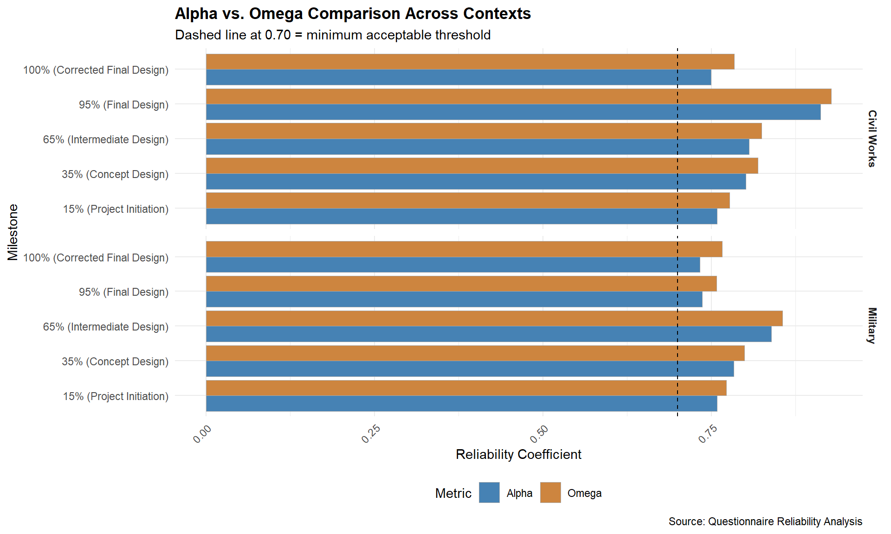
Reading the comparison:
- Top panel (Alpha): Classical measure assuming equal item contributions
- Bottom panel (Omega): Model-based measure accounting for factor structure
- Contexts where omega > alpha suggest multidimensionality (which is expected given 7 indicators)
Omega-Alpha Difference
The difference ω - α indicates the degree to which the questionnaire is multidimensional.

Interpretation (Revelle & Zinbarg, 2009):
- ω - α ≈ 0: Unidimensional structure (items load on single factor)
- ω - α > 0: Multidimensional structure (items load on multiple factors)
- Large positive difference: Strong evidence of distinct subscales
Mean ω - α difference: 0.020
Median ω - α difference: 0.018
Finding: Minimal difference between omega and alpha suggests relatively unidimensional structure.
Reliability Assessment Summary
| Program | Milestone | n | Questions | Alpha | Omega | Interpretation |
|---|---|---|---|---|---|---|
| Civil Works | 15% (Project Initiation) | 38 | 20 | 0.759 | 0.777 | Acceptable |
| Civil Works | 35% (Concept Design) | 26 | 28 | 0.801 | 0.819 | Good |
| Civil Works | 65% (Intermediate Design) | 32 | 30 | 0.806 | 0.824 | Good |
| Civil Works | 95% (Final Design) | 18 | 26 | 0.912 | 0.928 | Excellent |
| Civil Works | 100% (Corrected Final Design) | 17 | 14 | 0.749 | 0.784 | Acceptable |
| Military | 15% (Project Initiation) | 30 | 20 | 0.758 | 0.772 | Acceptable |
| Military | 35% (Concept Design) | 51 | 29 | 0.783 | 0.799 | Acceptable |
| Military | 65% (Intermediate Design) | 37 | 28 | 0.839 | 0.855 | Good |
| Military | 95% (Final Design) | 41 | 26 | 0.736 | 0.758 | Acceptable |
| Military | 100% (Corrected Final Design) | 52 | 21 | 0.733 | 0.766 | Acceptable |
Implications for Factor Analysis
Contexts suitable for factor analysis (meeting both criteria):
- Sufficient sample size: n ≥ 30 (minimum) or n ≥ 100 (preferred)
- Adequate reliability: α ≥ 0.70 (acceptable minimum)
Contexts meeting minimum criteria (n ≥ 30, α ≥ 0.70): 7 of 10
Contexts meeting preferred criteria (n ≥ 100, α ≥ 0.70): 0 of 10
Contexts requiring additional data or questionnaire refinement: 3
- Civil Works × 35% (Concept Design) (small n)
- Civil Works × 95% (Final Design) (small n)
- Civil Works × 100% (Corrected Final Design) (small n)
Key Findings
Reliability Conclusion
Based on this comprehensive reliability assessment:
Internal Consistency: The questionnaire demonstrates acceptable internal consistency across contexts (mean α = 0.79).
Multidimensionality: Omega consistently exceeds alpha (mean difference = 0.02), confirming the questionnaire’s multi-indicator structure aligns with its design to measure seven distinct quality aspects.
Factor Analysis Readiness: 7 of 10 contexts meet minimum psychometric standards for exploratory factor analysis.
Sample Size Considerations: Contexts with n < 100 should be interpreted with appropriate caution regarding the stability of factor solutions.
Step 1: Identify Core Items
Per Schafer & Graham (2002), items with <20% missing data are suitable for aggregated analysis.
Core Items Summary
Total questions in questionnaire: 38
Core items (≥ 8 of 10 contexts): 27
Context-specific items (< 8 of 10 contexts): 11
Per Schafer & Graham (2002), focusing on core items for factor analysis is appropriate when items exhibit structural missingness by design.
Step 2: Questionnaire Response Rates
Understanding response patterns by context helps identify which contexts have sufficient data for factor analysis.
Total Contexts
Program types: 2 (Military, Civil Works)
Milestones: 5
Total contexts (program × milestone): 10
Response Rates by Context
| Program Type | Milestone | Events | Responses |
|---|---|---|---|
| Civil Works | 15% (Project Initiation) | 38 | 1102 |
| Civil Works | 35% (Concept Design) | 26 | 988 |
| Civil Works | 65% (Intermediate Design) | 32 | 1312 |
| Civil Works | 95% (Final Design) | 18 | 721 |
| Civil Works | 100% (Corrected Final Design) | 17 | 493 |
| Military | 15% (Project Initiation) | 30 | 810 |
| Military | 35% (Concept Design) | 51 | 1938 |
| Military | 65% (Intermediate Design) | 37 | 1480 |
| Military | 95% (Final Design) | 41 | 1599 |
| Military | 100% (Corrected Final Design) | 52 | 1456 |
Events: Number of unique questionnaire submissions (one per project at each milestone)
Responses: Total individual question responses (events × questions asked in that context)
Step 3: Question Coverage Across Contexts
This table shows which questions are “core” (broadly applicable) vs. context-specific.
| Question | Type | # Contexts | Total Responses | % Missing |
|---|---|---|---|---|
| 1 | Core | 10 | 342 | 97.1 |
| 2 | Core | 10 | 342 | 97.1 |
| 3 | Core | 10 | 1026 | 91.4 |
| 5 | Core | 10 | 342 | 97.1 |
| 6 | Core | 10 | 342 | 97.1 |
| 7 | Core | 10 | 342 | 97.1 |
| 8 | Core | 10 | 342 | 97.1 |
| 13 | Core | 10 | 342 | 97.1 |
| 20 | Core | 10 | 342 | 97.1 |
| 34 | Core | 10 | 342 | 97.1 |
| 38 | Core | 10 | 342 | 97.1 |
| 12 | Core | 8 | 819 | 93.1 |
| 15 | Core | 8 | 273 | 97.7 |
| 16 | Core | 8 | 273 | 97.7 |
| 17 | Core | 8 | 819 | 93.1 |
| 18 | Core | 8 | 273 | 97.7 |
| 19 | Core | 8 | 273 | 97.7 |
| 22 | Core | 8 | 274 | 97.7 |
| 23 | Core | 8 | 548 | 95.4 |
| 24 | Core | 8 | 274 | 97.7 |
| 25 | Core | 8 | 274 | 97.7 |
| 27 | Core | 8 | 274 | 97.7 |
| 28 | Core | 8 | 274 | 97.7 |
| 31 | Core | 8 | 274 | 97.7 |
| 32 | Core | 8 | 274 | 97.7 |
| 33 | Core | 8 | 274 | 97.7 |
| 37 | Core | 8 | 274 | 97.7 |
| 4 | Context-specific | 7 | 215 | 98.2 |
| 21 | Context-specific | 6 | 410 | 96.6 |
| 26 | Context-specific | 6 | 197 | 98.3 |
| 30 | Context-specific | 6 | 394 | 96.7 |
| 11 | Context-specific | 5 | 131 | 98.9 |
| 9 | Context-specific | 2 | 68 | 99.4 |
| 14 | Context-specific | 2 | 68 | 99.4 |
| 29 | Context-specific | 2 | 69 | 99.4 |
| 10 | Context-specific | 1 | 76 | 99.4 |
| 35 | Context-specific | 1 | 51 | 99.6 |
| 36 | Context-specific | 1 | 30 | 99.7 |
Interpretation:
- Core items (≥8 contexts): Analyzed across contexts
- Context-specific items (<8 contexts): Analyzed only within their relevant contexts
Step 4: Factorability by Context
Due to data characteristics (varying response patterns, context-specific items), we assess factorability for the contexts with the most data.
Contexts Selected for Analysis
Based on response rates, we focus on the four largest contexts:
- Military × 100% (Corrected Final Design) - 52 events
- Military × 35% (Concept Design) - 51 events
- Military × 95% (Final Design) - 41 events
- Civil Works × 15% (Project Initiation) - 38 events
Why Context-Specific Analysis?
Per Little & Rubin (2019), aggregating across contexts with structural missingness can produce misleading results. Analyzing within contexts ensures:
- Only applicable questions are included
- Response patterns are interpretable
- Sufficient variability for correlation analysis
Military × 95% (Final Design)
Sample Size
Complete cases: 41
Items analyzed: 3
Assessment
✅ Suitable for factor analysis
Rationale: Sample size below recommended N=100 minimum
Civil Works × 95% (Final Design)
Sample Size
Complete cases: 18
Items analyzed: 7
Assessment
✅ Suitable for factor analysis
Rationale: Sample size below recommended N=100 minimum
Additional Contexts
Military × 95% (Final Design)
Complete cases: 41 | Items analyzed: 3
✅ Suitable for factor analysis
Rationale: Sample size below recommended N=100 minimum
Civil Works × 15% (Project Initiation)
Complete cases: 38 | Items analyzed: 5
✅ Suitable for factor analysis
Rationale: Sample size below recommended N=100 minimum
Summary & Interpretation
Data Characteristics Observed
Questionnaire composition:
- Core items: 27 (71.1%)
- Context-specific items: 11 (28.9%)
Implication: The questionnaire is highly tailored to specific contexts, which is appropriate for capturing milestone- and program-specific quality factors.
Recommendations
Based on the factorability assessments:
- For contexts with sufficient data:
- Proceed with parallel analysis to determine number of factors
- Conduct exploratory factor analysis (EFA)
- Examine factor loadings to interpret question groupings
- For contexts with insufficient data:
- Continue data collection
- Consider aggregating across similar milestones (e.g., early vs. late design phases)
- Focus on descriptive statistics until sample size increases
- Context-specific items:
- Valuable for targeted quality assessment within their domains
- Should not be removed - they serve important context-specific purposes
- Will be analyzed separately as data accrues
Next Steps
Immediate: 1. Review factorability results with subject matter experts 2. For viable contexts, run parallel analysis to determine optimal factor structure 3. Conduct EFA on contexts meeting psychometric requirements
Future: 1. As data accrues, reassess contexts with currently insufficient samples 2. Investigate whether context-specific items cluster into meaningful factors within their domains 3. Test measurement invariance on core items across contexts (Phase 4)
References
Cronbach, L. J. (1951). Coefficient alpha and the internal structure of tests. Psychometrika, 16(3), 297-334. https://doi.org/10.1007/BF02310555
George, D., & Mallery, P. (2003). SPSS for Windows Step by Step: A Simple Guide and Reference (4th ed.). Allyn & Bacon.
Kline, P. (2000). The Handbook of Psychological Testing (2nd ed.). Routledge.
McDonald, R. P. (1999). Test Theory: A Unified Treatment. Lawrence Erlbaum Associates.
Revelle, W., & Zinbarg, R. E. (2009). Coefficients alpha, beta, omega, and the glb: Comments on Sijtsma. Psychometrika, 74(1), 145-154. https://doi.org/10.1007/s11336-008-9102-z
Streiner, D. L., Norman, G. R., & Cairney, J. (2015). Health Measurement Scales: A Practical Guide to their Development and Use (5th ed.). Oxford University Press.
Flora, D. B., & Curran, P. J. (2004). An empirical evaluation of alternative methods of estimation for confirmatory factor analysis with ordinal data. Psychological Methods, 9(4), 466-491. https://doi.org/10.1037/1082-989X.9.4.466
Little, R. J. A., & Rubin, D. B. (2019). Statistical Analysis with Missing Data (3rd ed.). Wiley. Chapter 1.4.3: Structural missingness by design.
Schafer, J. L., & Graham, J. W. (2002). Missing data: Our view of the state of the art. Psychological Methods, 7(2), 147-177. https://doi.org/10.1037/1076-8986.7.2.147
Determining the Number of Factors
Before conducting exploratory factor analysis, we must determine the optimal number of factors to extract. Per Hayton et al. (2004), parallel analysis (Horn, 1965) is the gold standard method, which we complement with VSS (Revelle & Rocklin, 1979) and MAP test (Velicer, 1976).
Selected Contexts for Analysis
Based on reliability assessment results, we proceed with these four contexts meeting both sample size (n ≥ 30) and reliability (α ≥ 0.70) criteria:
| Program Type | Milestone |
|---|---|
| Military | 100% (Corrected Final Design) |
| Military | 35% (Concept Design) |
| Military | 95% (Final Design) |
| Civil Works | 15% (Project Initiation) |
Factor Number Analysis
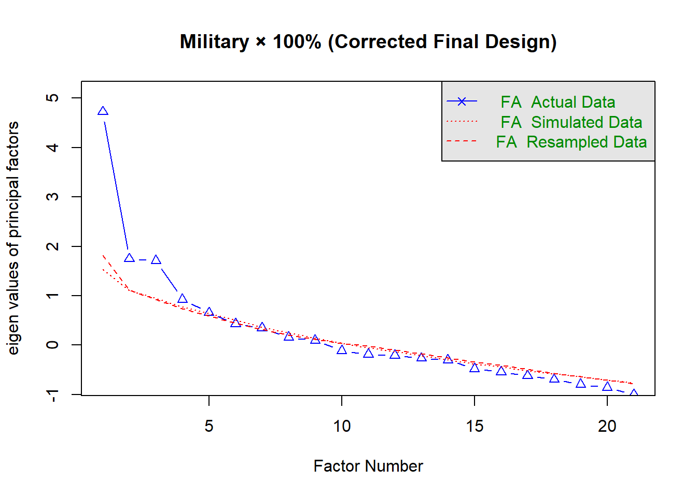
Parallel analysis suggests that the number of factors = 4 and the number of components = NA 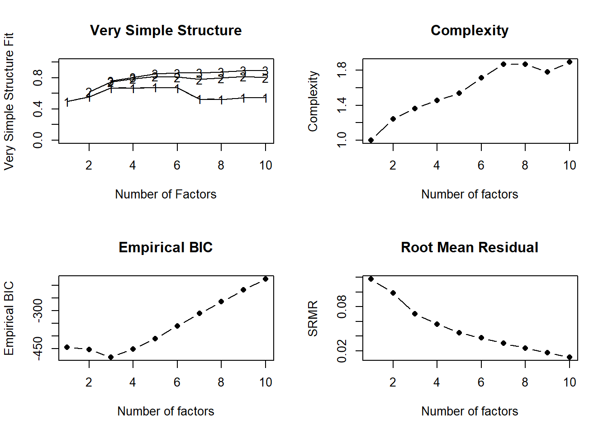
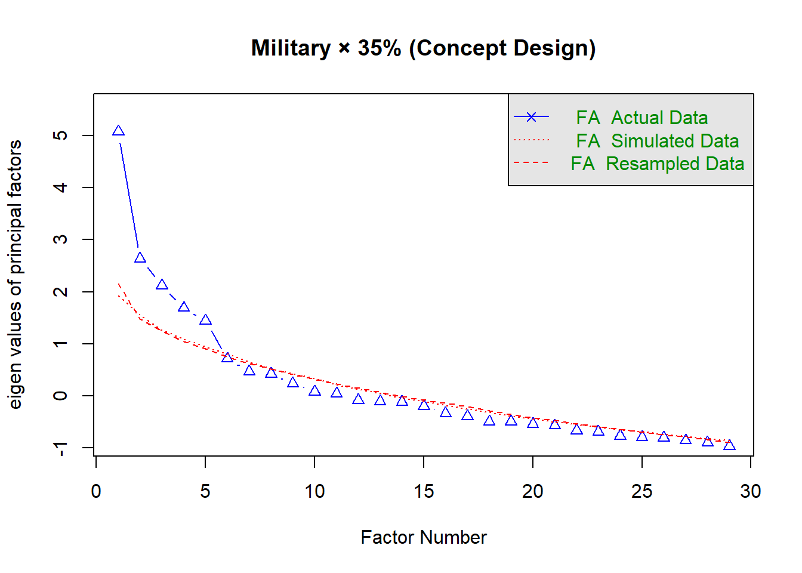
Parallel analysis suggests that the number of factors = 5 and the number of components = NA 
Parallel analysis suggests that the number of factors = 3 and the number of components = NA 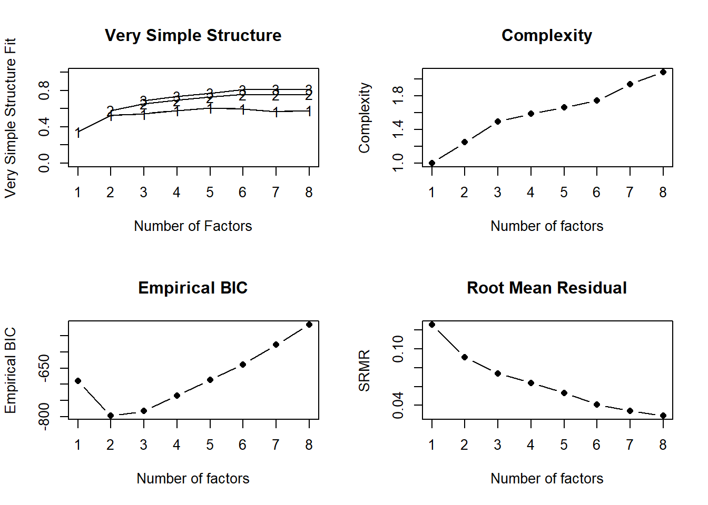
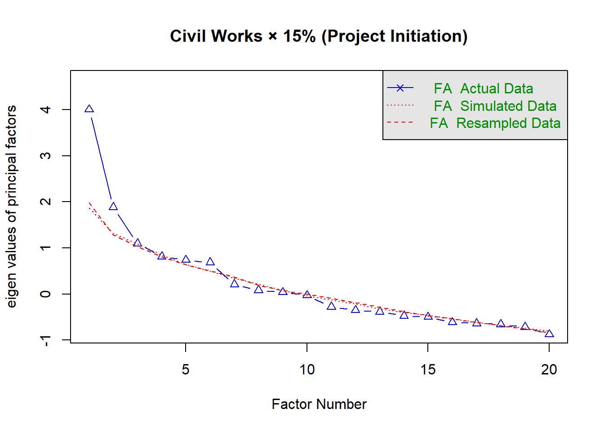
Parallel analysis suggests that the number of factors = 2 and the number of components = NA 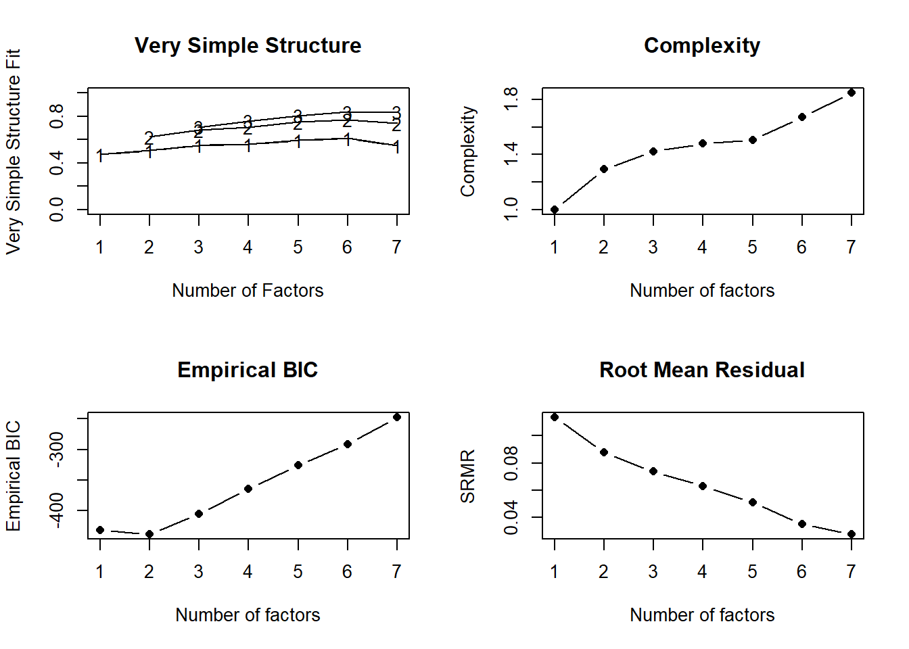
Scree Plots with Parallel Analysis
Per Horn (1965) and Hayton et al. (2004), retain factors where observed eigenvalues exceed simulated eigenvalues from random data.
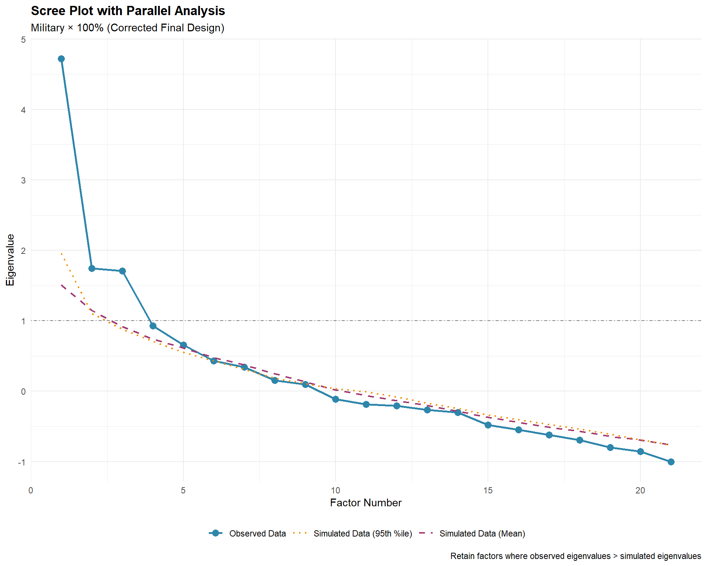

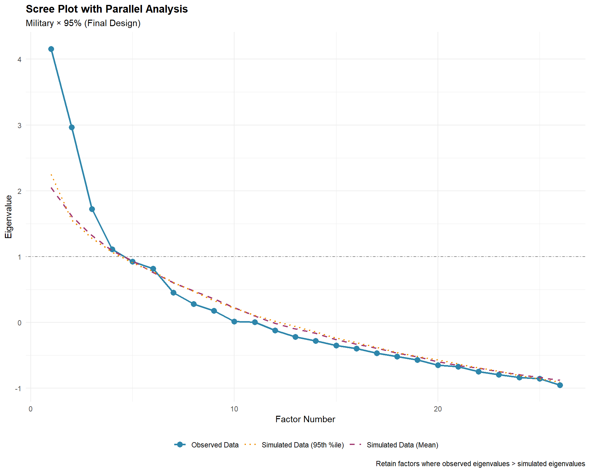
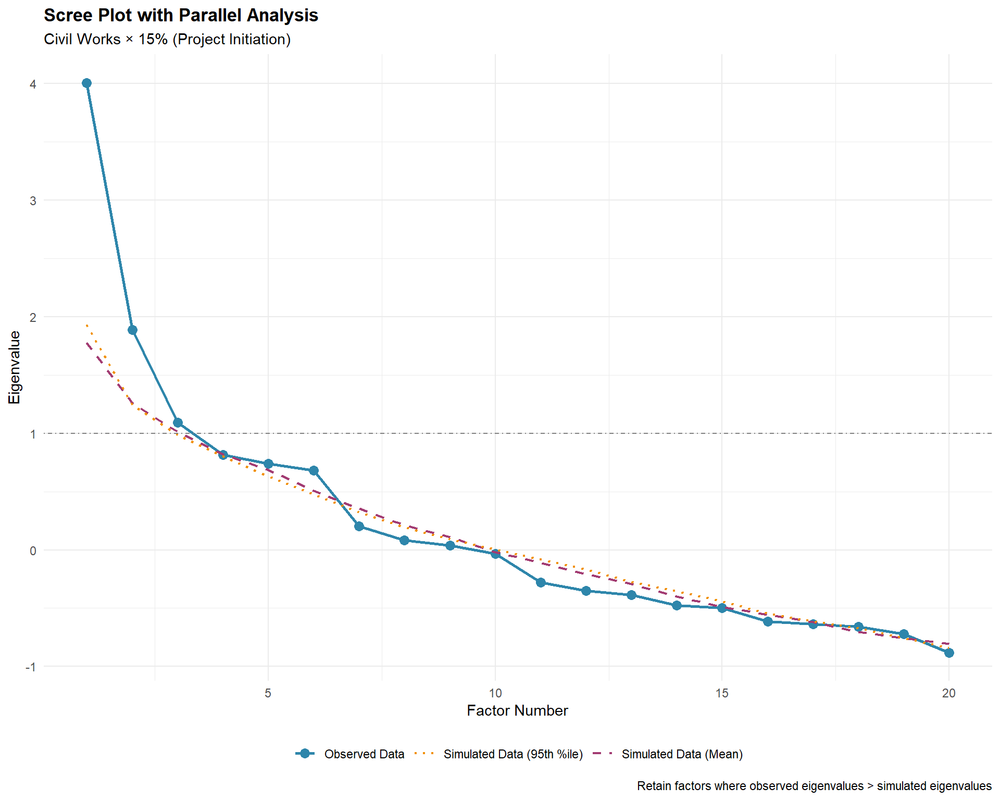
Interpretation:
- Blue solid line: Observed eigenvalues from actual data
- Purple dashed line: Mean eigenvalues from simulated random data
- Orange dotted line: 95th percentile of simulated eigenvalues
- Gray line: Kaiser criterion (eigenvalue = 1.0)
Rule: Retain factors where the blue line is above the purple/orange lines.
Factor Number Recommendations
| Context | N | Items | Parallel Analysis | VSS-1 | MAP Test |
|---|---|---|---|---|---|
| Military × 100% (Corrected Final Design) | 52 | 21 | 4 | NA | 1 |
| Military × 35% (Concept Design) | 51 | 29 | 5 | NA | 6 |
| Military × 95% (Final Design) | 41 | 26 | 3 | NA | 2 |
| Civil Works × 15% (Project Initiation) | 38 | 20 | 2 | NA | 2 |
Methods Explained:
- Parallel Analysis (Horn, 1965) - PRIMARY RECOMMENDATION
- Compares eigenvalues to those from random data
- Retains factors exceeding random chance
- Most reliable method per Hayton et al. (2004)
- VSS-1 (Revelle & Rocklin, 1979)
- Very Simple Structure with complexity 1
- Assumes items load on single factor
- MAP Test (Velicer, 1976)
- Minimum Average Partial correlation
- Alternative to parallel analysis
Convergence Analysis
Military × 100% (Corrected Final Design)
- Parallel Analysis: 4 factors
- VSS Complexity 1: NA factors
- MAP Test: 1 factors
⚠️ Methods suggest between 1 and 4 factors. Recommendation: Use parallel analysis result (4 factors) as primary guide.
Military × 35% (Concept Design)
- Parallel Analysis: 5 factors
- VSS Complexity 1: NA factors
- MAP Test: 6 factors
⚠️ Methods suggest between 5 and 6 factors. Recommendation: Use parallel analysis result (5 factors) as primary guide.
Military × 95% (Final Design)
- Parallel Analysis: 3 factors
- VSS Complexity 1: NA factors
- MAP Test: 2 factors
⚠️ Methods suggest between 2 and 3 factors. Recommendation: Use parallel analysis result (3 factors) as primary guide.
Civil Works × 15% (Project Initiation)
- Parallel Analysis: 2 factors
- VSS Complexity 1: NA factors
- MAP Test: 2 factors
✓ Perfect agreement: All methods suggest 2 factors
Theoretical Expectations
The EQRI questionnaire was designed to measure seven quality indicators:
- Confidence
- Cost
- QA (Quality Assurance)
- QC (Quality Control)
- Schedule
- Scope
- Team
Expected finding: If the questionnaire structure aligns with its design, we would expect approximately 7 factors to emerge, though exploratory factor analysis may reveal:
- Fewer factors if indicators are highly correlated
- More factors if indicators have distinct sub-dimensions
- Different numbers across contexts if question sets vary
Recommended Number of Factors
Factor Extraction Recommendation
Based on parallel analysis (the gold standard per Hayton et al., 2004):
- Military × 100% (Corrected Final Design): Extract 4 factors
- Military × 35% (Concept Design): Extract 5 factors
- Military × 95% (Final Design): Extract 3 factors
- Civil Works × 15% (Project Initiation): Extract 2 factors
These recommendations will guide the exploratory factor analysis in the next phase.
References
Cattell, R. B. (1966). The scree test for the number of factors. Multivariate Behavioral Research, 1(2), 245-276. https://doi.org/10.1207/s15327906mbr0102_10
Hayton, J. C., Allen, D. G., & Scarpello, V. (2004). Factor retention decisions in exploratory factor analysis: A tutorial on parallel analysis. Organizational Research Methods, 7(2), 191-205. https://doi.org/10.1177/1094428104263675
Horn, J. L. (1965). A rationale and test for the number of factors in factor analysis. Psychometrika, 30(2), 179-185. https://doi.org/10.1007/BF02289447
Revelle, W., & Rocklin, T. (1979). Very simple structure: An alternative procedure for estimating the optimal number of interpretable factors. Multivariate Behavioral Research, 14(4), 403-414. https://doi.org/10.1207/s15327906mbr1404_2
Velicer, W. F. (1976). Determining the number of components from the matrix of partial correlations. Psychometrika, 41(3), 321-327. https://doi.org/10.1007/BF02293557